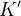
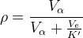
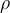
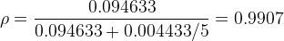
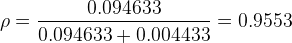
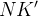
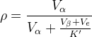
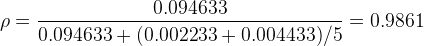
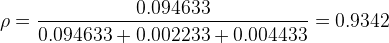

| テスト理論 |
| テスト理論 |
D研究によって得られた分散の情報をもとに、特定の状況下で評価が行われた場合の信頼性を検討することを、一般化可能性理論ではG研究という。 一般化可能性理論では、これを一般化可能性係数と呼ばれる指標を用いて評価する。 これは、古典的テスト理論における信頼性係数を拡張したものである。
Table 8 のデータから、モーグルのターンを人の審判が採点した場合の一般化可能性係数は、
|  | (91) |
によって計算される。つまり、審判の数が多いほど一般化可能性係数は大きくなり、信頼性の高い評価が可能となるということである。
仮に、本番と同じように5人の審判で採点を行った場合、
|  | (92) |
と高い信頼性のあることがわかる。
一方、もし審判が1人しかいなかった場合、信頼性は
|  | (93) |
と低下する。
さらに、競技者ごとに異なる人の審判が採点するとする（合計で人の審判）。 この場合、一般化可能性係数は
|  | (94) |
によって計算される。この値は、明らかに式 (91) より小さくなる。
実際、仮に競技者ごとに別の審判が5人ずつ組になって採点を行った場合、一般化可能性係数は
|  | (95) |
となる。さらに、競技者ごとに異なる審判が1人で採点した場合、
|  | (96) |
となり、評価の信頼性はさらに下がることがわかる。
このように、G研究を行うことで、実際に行われた採点だけでなく、新たに想定される採点状況下でどのような評価を得ることができるか検討することができる。 また、最低限必要な信頼性を担保するために、採点者を何人用意すればよいのかといった情報を得ることもできる。
| テスト理論 |